Jessica Alba Dynasty LeagueTen teams. Two conferences. One Jessica Alba.
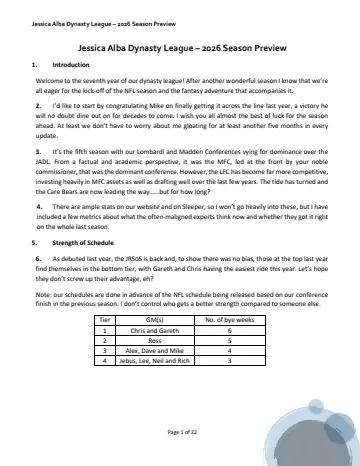
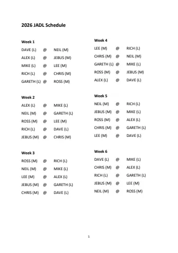
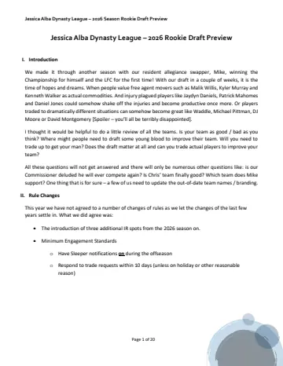
Earlier: the 2025 season →
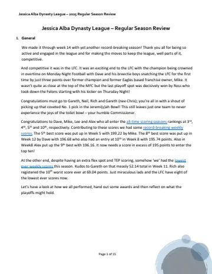
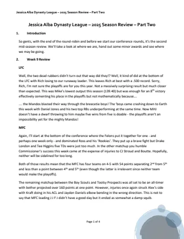
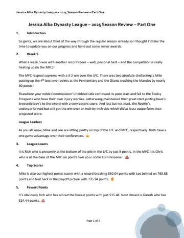
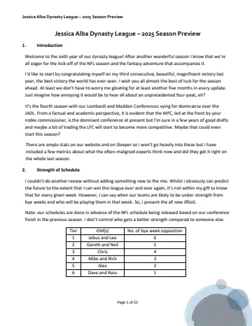
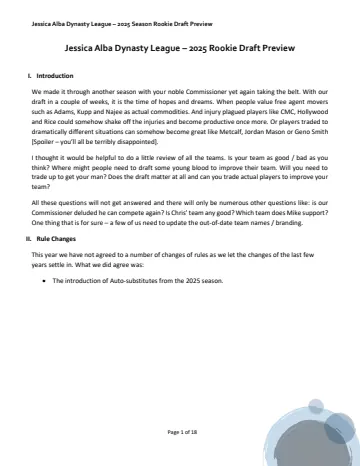
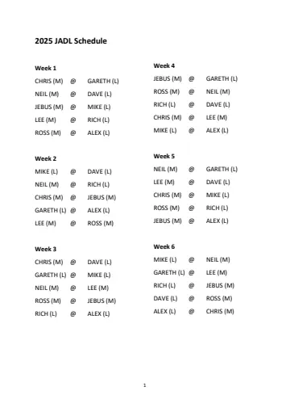
Earlier: the 2024 season →
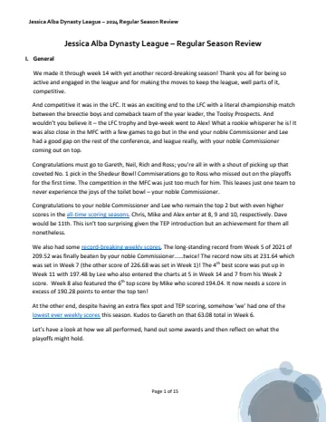
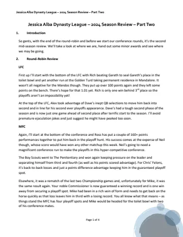
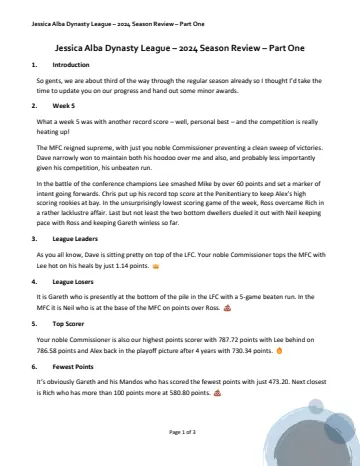
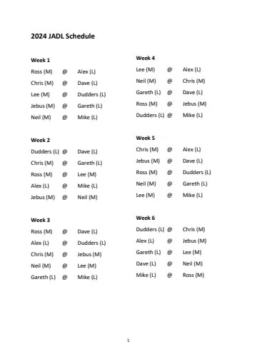
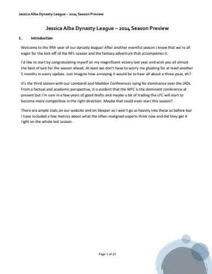
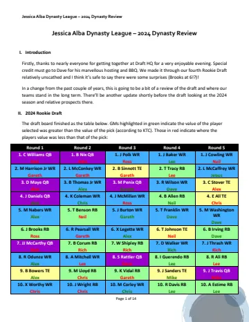
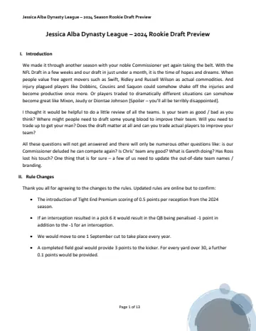
Earlier: the 2023 season →
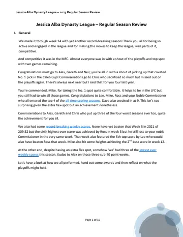
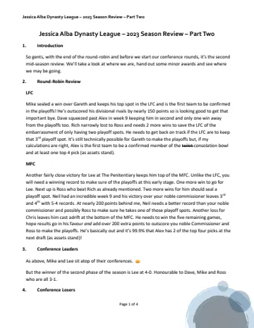
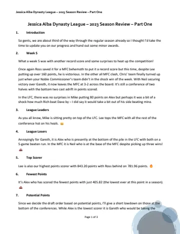
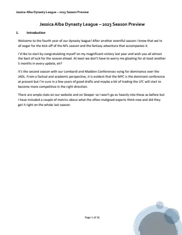
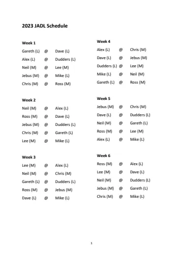
Earlier: the 2022 season →
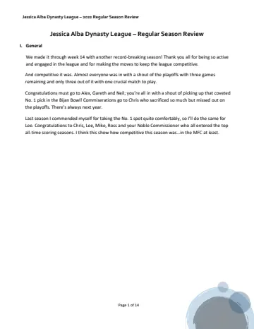
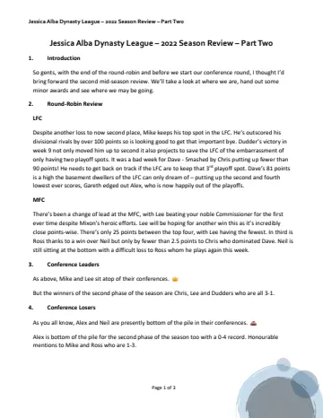
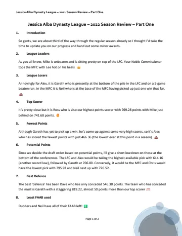
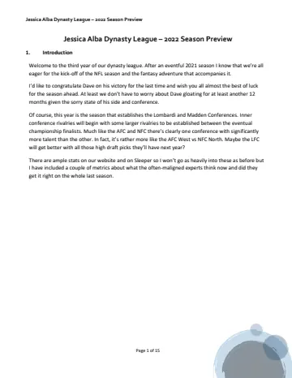
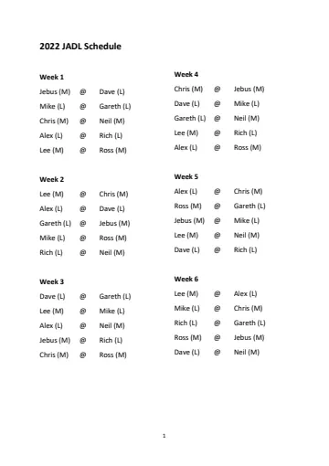
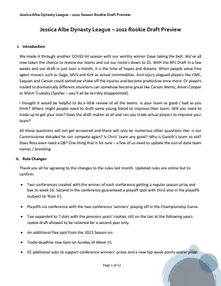
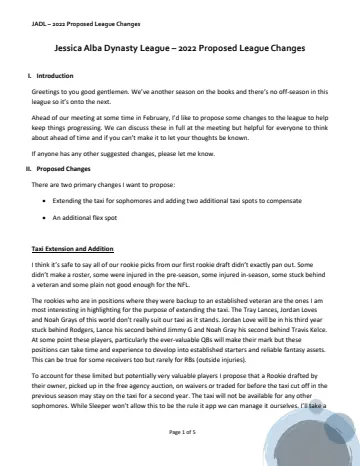
Earlier: the 2021 season →
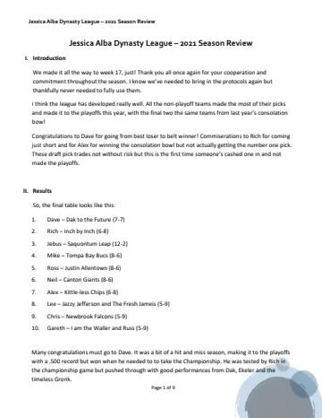
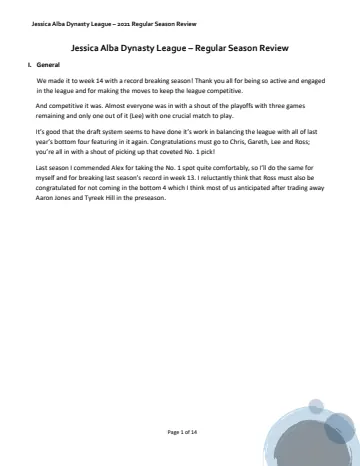
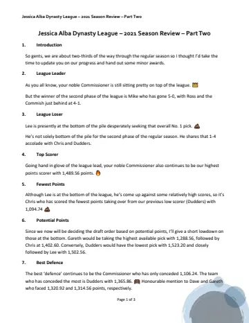
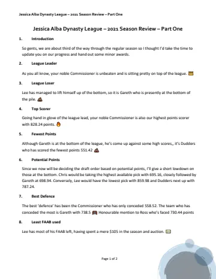
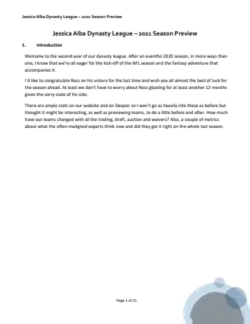
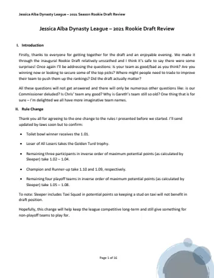
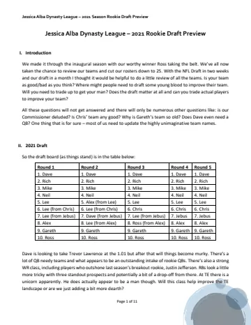
Earlier: the 2020 season →
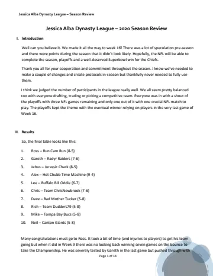
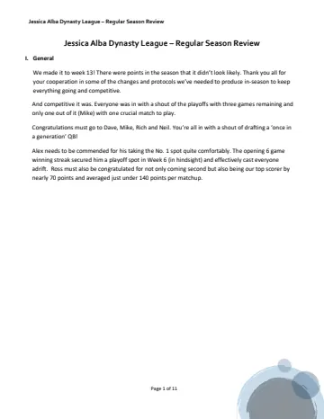
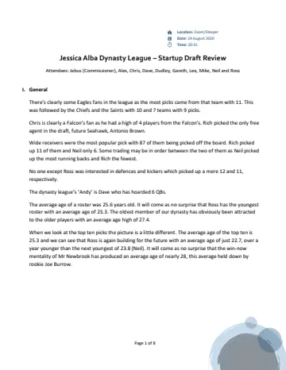